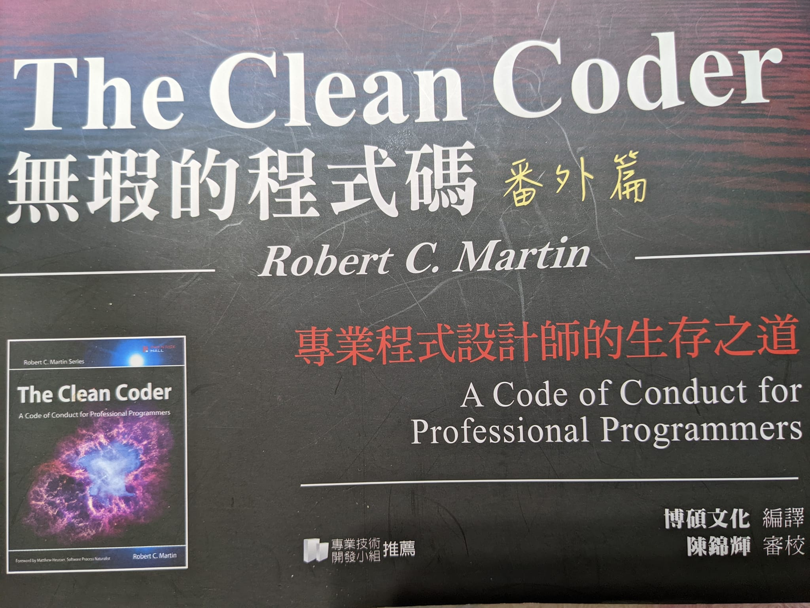

無瑕的程式碼番外篇 - 説「不」/ 説 「是」

大家好，我是 Cindy，最近發現無暇程式碼的番外篇蠻好看的，適合在職場打滾的工程師們看，比起 clean code，the clean coder 比較算是軟實力的部分，主要是在說身為一個專業的工程師應該要有怎麼樣的態度、原則與行動，這篇會是第二、三章節的重點及心得整理。想先看第一章重點心得的各位觀眾可以先點 這裡 唷！
説「不」
能就是能，不能就是不能。不要說「試試看」。
這章節作者寫了一些故事，實際會發生在工作中的事情。一個強迫在預計時間準時上線，但是充滿問題不穩定的系統的另一場悲劇，這邊故事我覺得大家可以自己拿書來看看我就不詳細寫囉。
畫重點：
- 專業人士敢於說明真相而不屈從於權勢。專業人士有勇氣對他們的經理說「不」。
- 如果明知第二天前不可能完成功能，嘴上卻說「好的，我會試試看」，那麼便是你失職了。
- 竭盡所能捍衛目標，雙方才能得到可能的最好結果。
- 最重要的是要找到那個『共同目標』，而這往往有賴於『協商』。
作者舉了一些例子，讓讀者理解工作中的雙方有沒有嘗試尋求『可接受的共同目標』，以及努力尋求『最佳的可能結果』的情況是什麼樣子。
最後作者也舉了一個小故事，在不合理的時程(兩週開發一個 iPhone app、一個後端 PHP、QA)中趕工寫出了不符合設模式的程式碼，最後辛苦了老半天也沒上線的悲慘故事，說明了說「是」的成本有多大多悲慘。
老實說那些看不見程式碼的人可能無法理解，但糟糕的程式碼絕對會拖慢之後每一次的開發速度，畢竟寫程式碼的也是人，讀不懂前人寫的程式碼，又要如何去修改勒，所以勢必要先花時間理解囉，另外糟糕的程式碼也會很容易改 A 壞 B，改 C 壞 D，修改程式碼的成本是相當高的。如果我寫的程式碼是可以讓每個工程師輕鬆上手，這樣是不是表示哪天我發生了什麼意外，我的心血還是有持續延續的最大可能性勒。
委屈『專業原則』以求全，並非問題的解決之道。捨棄這些原則，只會製造出更多的麻煩。
説 「是」
口頭上說。心裡認真。付諸行動。
畫重點：
- 雖然你只能承諾自己能完全掌握的事。但你能承諾自己會採取一些具體行動來達成這個最終目標。
常常我們會受限於與第三方合作，所以才無法肯定完成時間，但是我們可以承諾我們要採取的行動，例如：建立與第三方溝通的介面格式文件，並在本週與第三方開會確認格式是否要調整。
- 弄清楚『目標能否達成』這件事，便是你可以採取的努力行動之一。
- 有些事情先前你可能沒預料到，這很現實。但如果你仍然希望自己不負眾望，那就趕緊去調整別人對你的期待，越快越好！
- 如果你能夠一直信守承諾，大家會認為你是『一名嚴謹負責的開發人員』。在我們這一行中，這也是最有價值的評價。
- 專業人士對自己的能力極限暸若指掌。
- 專業人士不需要對所有請求都回答「是」。不過，他們應該努力尋找創新的方法，盡可能做到有求必應。當專業人士給出肯定回答時，他們會使用『承諾用語』，已確保各方能無誤地明白及理解承諾的內容。
超級認可這兩章說的內容，捨棄專業只會造成更多的悲劇在未來發生。這兩章節雖然在講說「是」或「不」，但我覺得也有很重要的一點就是說出來。我最喜歡的也是直接又透明化的表達，最討厭那種迂迴又不直說的人惹，常常悲劇就是在沒說出來的地方發生，大家共勉之。下一篇會講關於寫程式這件事情，大家敬請期待！
往專業人士的路上前進，歡迎大家給我任何的回饋唷：）